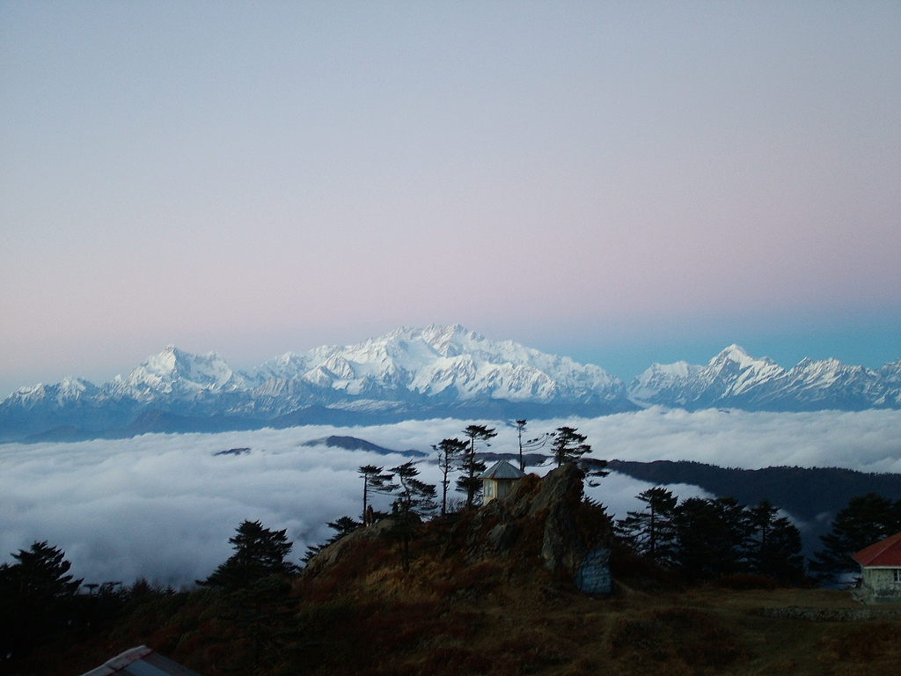
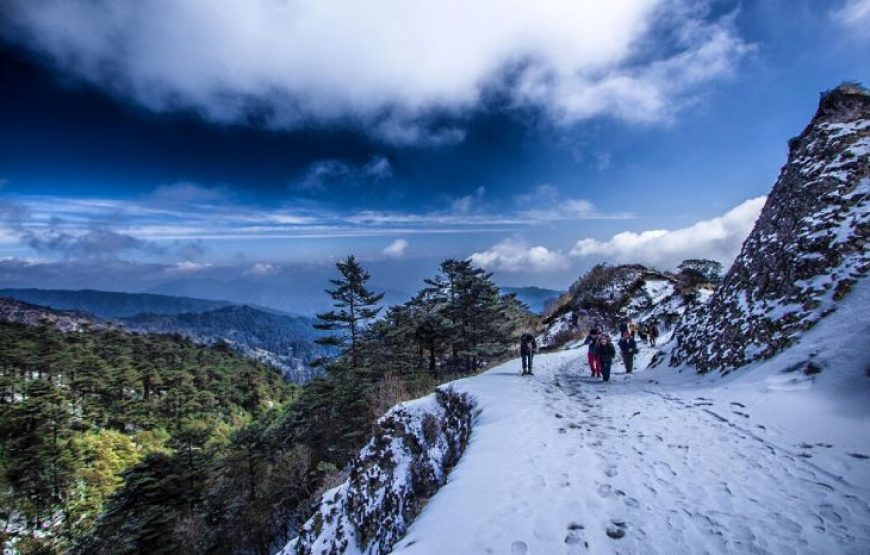
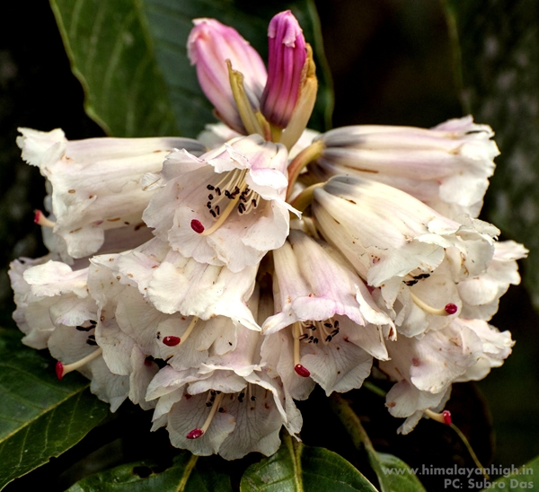
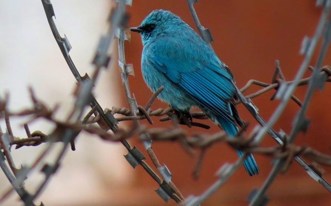

About Sandakphu
Sandakphu, the highest peak in West Bengal, India, offers a breathtaking view of the four tallest mountains in the world: Mount Everest, Kangchenjunga, Lhotse, and Makalu. Located in the Singalila National Park, it is a popular trekking destination for adventure seekers and nature lovers.
The journey to Sandakphu takes you through picturesque landscapes, charming villages, and dense forests rich with rhododendrons, magnolias, and orchids.
Highlights:
- Panoramic views of the Himalayas, including the "Sleeping Buddha" formation.
- Unique flora like rhododendrons, primulas, and orchids.
- Rare fauna such as the red panda and Himalayan black bear.
- Tranquil trekking routes through Singalila National Park.
- Starry night skies, perfect for stargazing.
The stunning vistas of Sandakphu.




Location
Activities:
- Trekking - Explore trails with mesmerizing views.
- Camping - Enjoy a night under the stars.
- Photography - Capture the stunning landscapes and unique wildlife.
- Flora & Fauna Observation - Discover rare Himalayan species.
- Cultural Exchange - Visit nearby villages and experience local traditions.
Embark on a journey to Sandakphu and immerse yourself in the awe-inspiring beauty of the Himalayas.
Back to Home